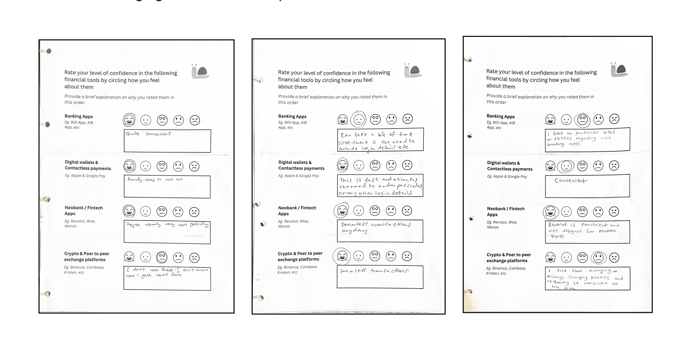
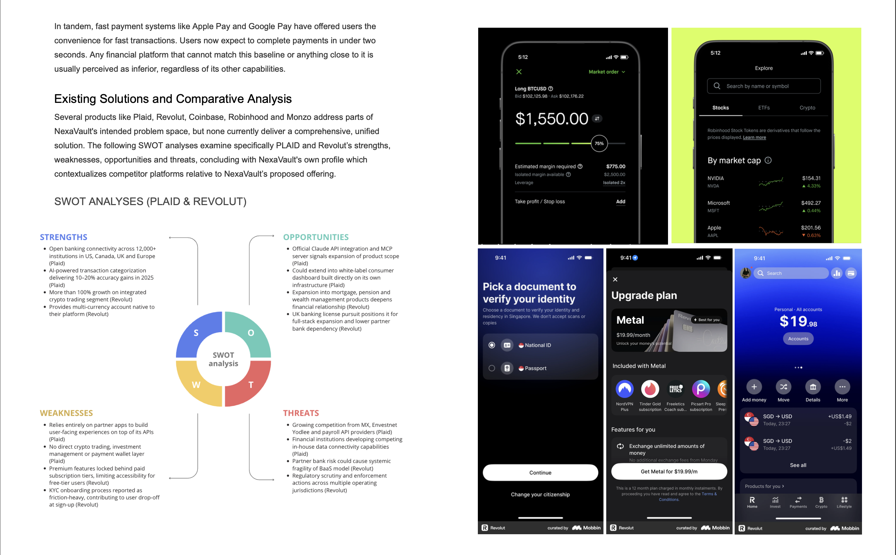
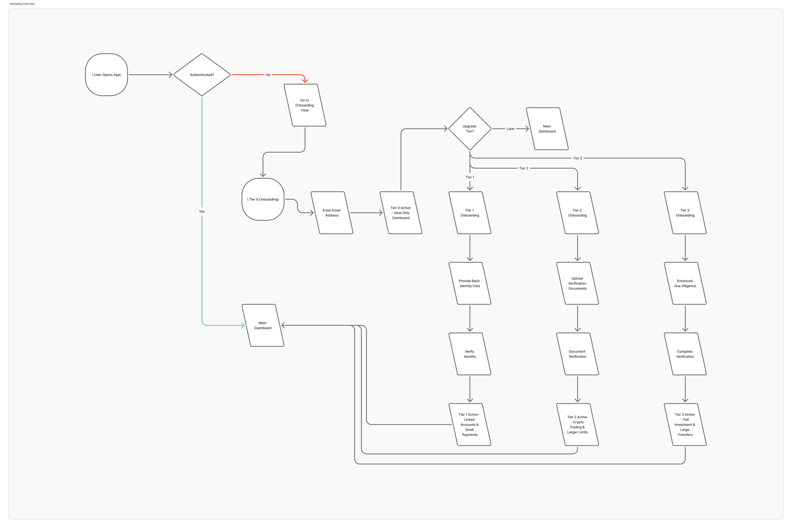
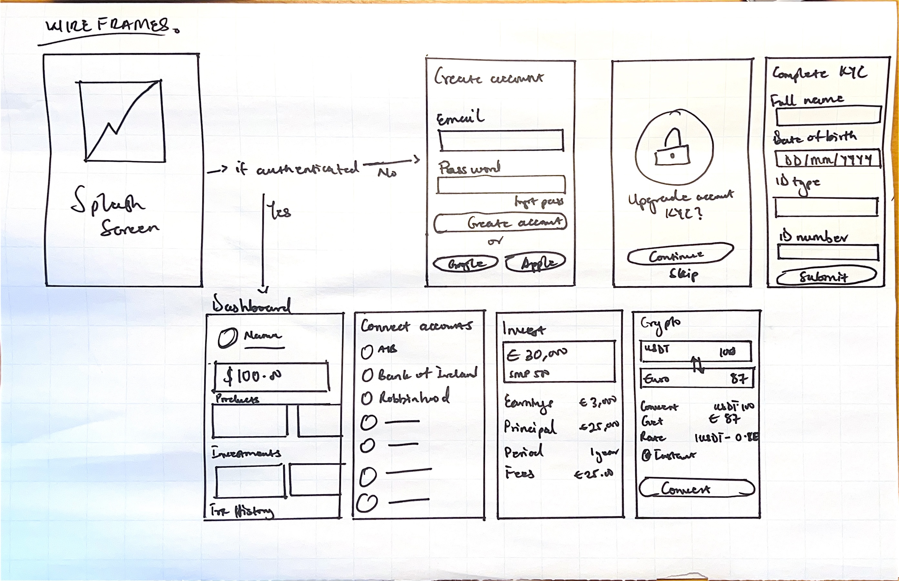
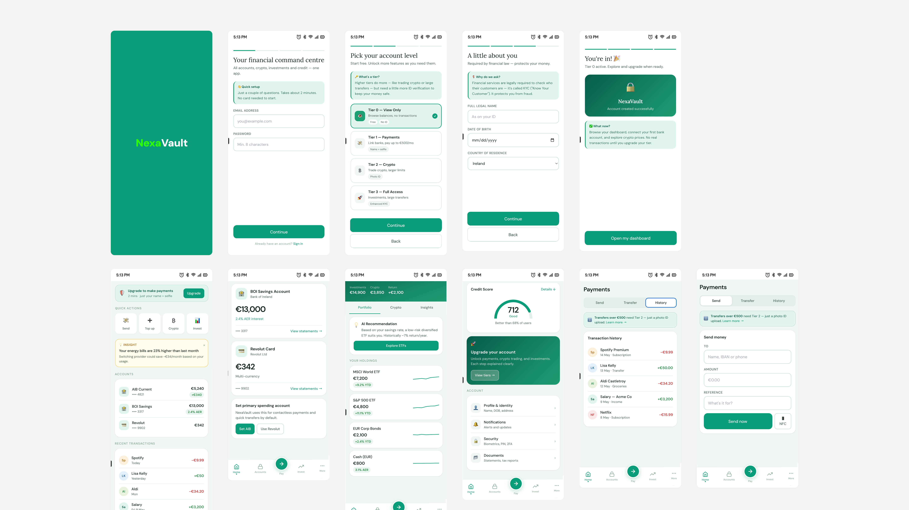

NexaVault Financial Command Centre

Project overview
NexaVault is a mobile-first financial command centre concept that brings together everyday banking, investment tracking, crypto access and fast payments inside a single, tiered-access interface. The concept began as an academic cultural probe study, deployed to five participants over one week, and evolved through background research, ideation and prototyping into a tested high-fidelity Figma prototype.
The starting problem was fragmentation: people manage money across bank apps, payment apps and crypto exchanges, each with its own credentials, dashboard and mental model. At the same time, decentralised finance remains under-adopted because of unfamiliar concepts, trust concerns, and heavy verification requirements. NexaVault set out to ask what a single, trustworthy home for all of it could look like.
Research method: cultural probes
Rather than starting with interviews or surveys, I designed a cultural probe kit to surface honest, unscripted reflections on money and technology. Each kit contained a seven-activity “Money and Technology” booklet, a set of printed dummy Euro notes, labelled budgeting envelopes, and stationery, all packaged in a document wallet. Five participant groups - salaried workers, working students and small business owners - engaged with the kit at their own pace over one week, then returned it for review.
The seven activities moved participants from free association (a word-prompt on “Decentralised Finance”) through emotional rating scales, decision-tree mapping, a story-completion exercise, a free sketch of an ideal financial tool, and a €1,000 budgeting exercise using the dummy notes and envelopes.


Key findings
- Trust is primary: Comfort tracked closely with how long a tool had been used or how well-known its institution was, and surfaced the biggest single barrier to DeFi adoption.
- Fragmentation is a daily pain point: Multiple participants independently sketched the same idea - one dashboard for accounts, investments and payments.
- Crypto is desired but feared: Participants wanted exposure to crypto as an investment channel but were held back by complexity and perceived irreversibility.
- KYC friction drives abandonment: Heavy upfront verification was named directly as a reason people give up on a platform before ever using it.
- Convenience and speed are non-negotiable: Universal enthusiasm for Apple Pay and Google Pay confirmed that frictionless payment is a baseline expectation, not a differentiator.
From insight to concept
Combining the probe findings with background research into Plaid, Revolut, Coinbase, Robinhood and Monzo revealed a gap: no consumer product currently combines account aggregation, investment tracking, embedded crypto and fast payments inside one tiered-access experience. Plaid operates as infrastructure rather than a consumer product, and Revolut, the closest comparison, still feels split between traditional and decentralised finance.
This gap, combined with the participants' own sketches, shaped the selected concept: a “Financial Command Centre” with progressive KYC, so users unlock more of the product as they build trust with it, rather than facing a wall of verification on day one.

Applied design principles
- Trust-first: Layout consistency, transparent data sourcing, visible privacy controls and calm, jargon-free language build confidence over time.
- Progressive disclosure: The home screen surfaces summary data with detail on demand; crypto concepts are introduced through contextual tooltips rather than mandatory tutorials.
- Unified mental model: Bank accounts, investments and crypto are treated as one financial identity, with consistent terminology (“balance,” not sometimes “portfolio value”) throughout.
- Minimum necessary friction: Onboarding asks only for what's legally required at each tier, and forms are pre-filled wherever data already exists on the platform.
Tiered onboarding
Verification unlocks in four stages: Tier 0 (view-only, email address only), Tier 1 (linked accounts and small payments, basic identity data), Tier 2 (crypto trading and larger limits, document verification), and Tier 3 (full investment features, enhanced due diligence). This structure came directly from the probe finding that heavy upfront KYC drives abandonment.


High-fidelity prototype
The final visual direction combines reference points from Revolut's onboarding patterns and Credit Karma's credit-score breakdown, translated into a lighter, white-mode-first interface with teal accents, card-based layouts and generous whitespace - deliberately calmer than the dark-mode aesthetic typically associated with crypto apps.
The MVP scope prioritises the core dashboard, open-banking account linkage and the tiered KYC onboarding flow, with investment tracking, the crypto module and fast-payment integrations planned as subsequent iterations.

Reflection
The cultural probe format surfaced things a survey couldn't have: the “command centre” concept emerged independently, unprompted, across multiple participants' sketches, which became the most generative data point in the whole study. The sample was intentionally small for qualitative depth rather than statistical breadth, and recruitment likely skewed toward people already comfortable with digital tools. A follow-up round with broader recruitment would strengthen the findings.
Trust-first was chosen as the anchoring principle because trust isn't a feature of a financial interface - it's the precondition for anyone engaging with it at all. The prototype is a functional interactive demonstration rather than a working application. Open banking data, the crypto engine, investment aggregation and the AI insights layer are all simulated, so the trust the interface communicates still depends on real infrastructure delivering on that promise. The mobile-first decision was grounded in participant sketches and market context; desktop and tablet remain open questions for future phases.